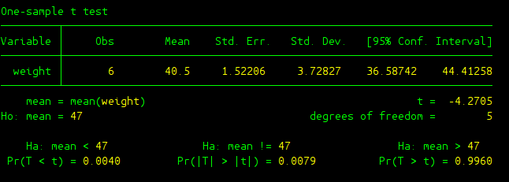
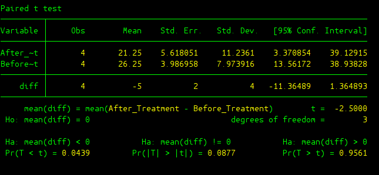
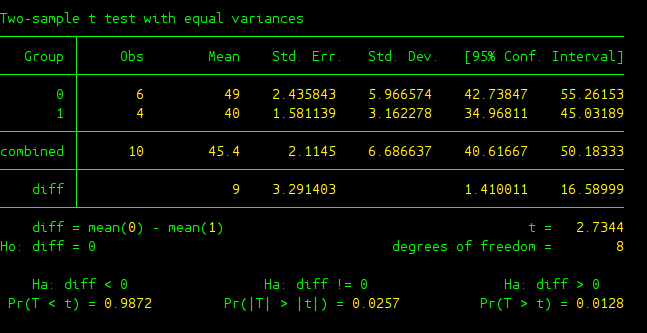
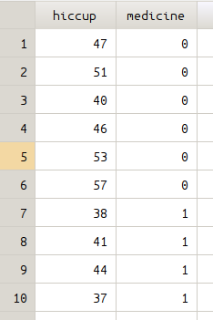
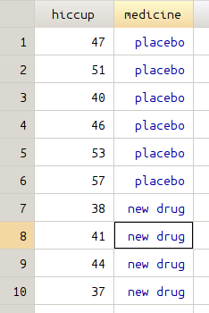
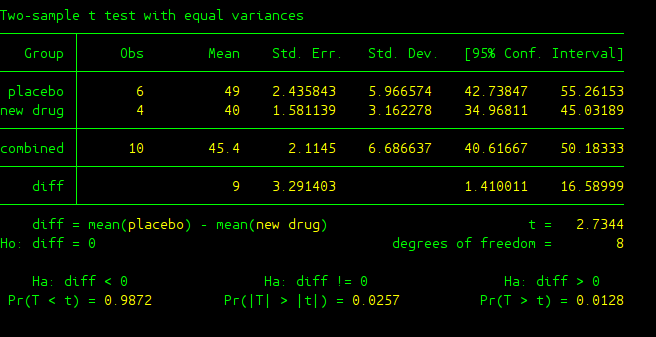

Section 2: t Test Flavors¶
This Section introduces you to the implementation of the three t-test techniques we have learned. The toy examples used below are taken directly from the practice we did in the class. You can refer to the file “Practice Problems in Lecture Note” (Practice Problems thereafter) on On-Course.
Sectioin 2.1: Single Sample t Test¶
Question 20 “Pay Per Can” in Practice Problems¶
The first step is to set the working directory of STATA into the folder where holds the data. The data we are using in this example can be found in the last section “Do-files and Data files” (files).
Through use command you can load the data we want to analyze.
use pay_per_can.dta
edit command allows you to inspect the data you are currently loading.
edit
As you can see from the data file, there’s only one variable called “weight”, which is the weight of trash can. To test whether the “pay per can” program has changed the weights of people’s trash cans, single sample t test should be used. The ttest command can help you do the analysis.
ttest weight == 47
The output looks like the following
Now, it is time to get the information from this output and make the final conclusion for our single sample t test. Let me first explain some terms from the output:
- Obs: sample size of the data
- Mean: sample mean from the data
- St. Err.: estimate of the standard error, the standard deviation of our comparison distribution
- Std. Dev.: estimate of population standard deviation made up of individual raw scores.
- Ho: This is our null hypothesis, remember we need to test whether the population average weight of trash can is different from 47.
- Ha: This is our research hypothesis. For the sake of completeness, STATA provides us with three possibilities: (1) left-tailed test “Ha: mean < 47”; (2) two-tailed test “Ha: mean != 47”; (3) right-tailed test “Ha: mean > 47”.
- Pr(T < t), Pr(|T| > |t|), Pr(T > t): these are p-values for three different tests (left, right, or two-tailed tests). Apparently, as far as our concern, p value is 0.0079.
- t: t gives you the t test-statistic obtained from our sample data.
- degree of freedom: this tells us the comparison distribution here should be t distribution with degree of freedom 5 (sample size minus one).
In terms of making final conclusion, we can use one of the following two methods: (1) compare t test statistic (t = -4.2705) against critical value (+/- 2.571 under alpha level of 5%); (2) compare p-value (p = 0.0079) against alpha level (5% or other values).
Apparently it is much easier to use second method to make the conclusion regarding this t test, whenever you have a p-value which is less than alpha level, you should reject the null hypothesis. And here since p-value is 0.0079, we are going to reject the null hypothesis and conclude that the effect of “pay per can” program on the weight of trash can is significant.
Section 2.2: Within-Subject t Test¶
Qeustion 21 “Hypnosis” in Practice Problems¶
In order to proceed, you need to use clea all to clear all the data in the memory that is previously loaded, and then redirect the working directory of STATA to the folder where hold the data we are about to use. You can find the data in the last section “Do-files and Data files”.
Load the data we want to analyze.
use hypnosis.dta
Use edit to inspect your data.
edit
There are three variables in the data file, the variable “Participant” in the first column gives the identification number of the participants in the experiment, the variable “Before_Treatment” in the second column is the number of cigarettes smoked before the hypnosis treatment, the last variable “After_Treatment” specifies the number of cigarettes smoked after the hypnosis treatment. A simple ttest command can help you do the within-subject t test.
ttest After_Treatment == Before_Treatment
The output is here
The output is almost the same as the output in single sample t test. STATA creats a new variable “diff” which is the difference between after treatment value and before treatment value for each participant. Then from there, STATA basically conducted a single sample t test analysis on the “diff” variable. In this analysis we get a t test statistic of -2.5 and p-value is 0.087 under a two-tailed test. Hence, in terms of conclusion, we fail to reject the null and hence there was not a significant effect of hypnosis on cigarette smoking.
Section 2.3: Between-Subject t Test¶
Qeustion 29 “Hiccups” in Practice Problems¶
As always, clear all the previously loaded data in the memory and change the working directory to the path where holds the data we are about to analyze. You can find the data in the last section “Do-files and Data files”. This time we use “hiccups.dta”, which is about a new drug on curing hiccups.
Load the data we want to analyze.
use hiccups.dta
Use edit to inspect your data.
edit
The first variable “hiccup” is the number of hiccups people make, the second variable “medicine” is an indicator of whether the new drug is given, 0 means placebo is given while 1 indicates the new drug is given. A modified version of ttest is used, we add an option “by(medicine)” since we want to compare two groups of people according to whether the new drug is given or not.
ttest hiccup, by(medicine)
The output is given here
Some new variables in the output deserve to be explained.
- Group: It gives categories(levels) of the independent variable that you manipulated. In our case IV is medicine and it has two levels which are 0 (placebo) and 1 (new drug).
- combined: The statistics following combined are calculated from the pool data coming from all categories (levels) of your IV.
- diff: It is about the difference of two groups of data we are interested in.
- diff = mean(0) - mean(1): It is about the population mean difference between 0 (placebo) group and 1 (new drug) group.
- Ho: diff = 0: The null hypothesis, where the two groups are the same.
From the output, we get a t score of 2.7344 and p-value of 0.0128, we can conclude that there was a significant effect of the new drug on curing hiccups.
Labeling Your Independent Variable¶
We used 0 and 1 to denote two levels of our independent variable “medicine”. Suppose some time has pasted, you go back to check the data and your statistical analysis. By then I bet you would have no idea what 0 and 1 mean. This is where a label can help, it serves as a tag telling you what 0 or 1 stands for.
We can use the command label define to create a label med_label that associates 0 with placebo and 1 with new drug.
label define med_label 0 "placebo" 1 "new drug"
We then use label values command to assign the newly created label med_label to our IV medicine.
label values medicine med_label
Then if you use edit to inspect your data, it will become the following. The data on the right is the one after defining med_label.
 {kind=link}
{kind=link}
Same command can be used to conduct between subject t test.
ttest hiccup, by(medicine)
The output is almost the same as before except for that we are much clearer about the distinction between placebo group and the group that intook the new drug.
Do-files and Data files¶
The do file and data files used in the examples can be found here.